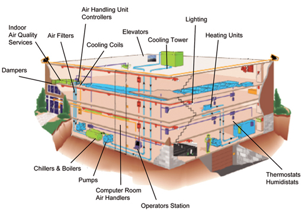

Building Maintenance Scheduling

A process in which the functionality of the building structure (walls, floors, roof, etc) and equipment serving the building (mechanical, electrical, plumbing, etc) are maintained over the operational life of a facility.
A successful maintenance program will improve building performance, reduce repairs, and reduce overall maintenance costs.
Potential Value
- Plan maintenance activities proactively and appropriately allocate maintenance staff
- Track maintenance history
- Reduce corrective maintenance and emergency maintenance repairs
- Increase productivity of maintenance staff because the physical location of equipment/system is clearly understood
- Evaluate different maintenance approaches based on cost
- Allow facility managers to justify the need and cost of establishing a reliability centered maintenance program
Resources Required
- Design review software to view Record Model and components
- Building Automation System (BAS) linked to Record Model
- Computerized Maintenance Management System (CMMS) linked to Record Model
- User-Friendly Dashboard Interface linked to Record Model to provide building performance information and/or other information to educate building users
Team Competencies Required
- Ability to understand and manipulate CMMS and building control systems with Record Model
- Ability to understand typical equipment operation and maintenance practices
- Ability to manipulate, navigate, and review a 3D Model